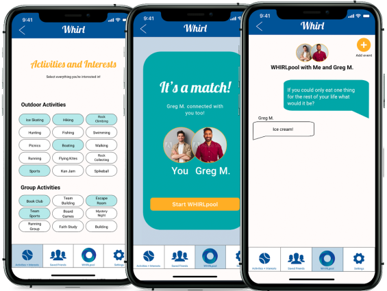

Solving problems can come about in many ways. For this particular project it started with brainstorming from each member's personal perspective. The mission? To design a mobile app that solves a real need in a person's day-to-day life. In 3 weeks, our team needed to conduct user research, define the problem, ideate solutions, prototype the potential solution, and then test that solution with users and iterate based on user feedback.
WHAT I DID.
UX Researcher - conduct user interviews, wrtiting interview plans, user surveying, develop problem statement, ideation methodology, feature prioritization, value proposition statement, sketching data synthesis, prototyping, and writing presentation script.
THE TEAM.
Annie Szarmach – UX & Visual Designer
Carl Booker – UX Designer
Chip Perkins – UX Researcher
What we made.
UX Hypothesis & Research.
In today’s landscape of social media, dating apps, and cultural pressures, it can be challenging to find the time to meet authentic people that turn into genuine friends. Why can’t it be like when we were kids? When we could walk up to someone, ask if they would be our friend, and boom, we’re playing on the playground?
First and foremost, we started gathering data from six interviews and a survey. At the core of our questioning for both interviews and surveys: we wanted to understand how people make connections today, what drives them to form friendships, and what tools they use to maintain and grow these friendships. By having answers to these questions we might help otherwise lonely individuals meet another – leading to a lasting friendship.
From litening to six people's stories and reading responses from 68 respondants to our 20 question survey, we found that a lot of adults (77.9% of respondants were age 21-28) really struggle to form friendships – especially when doing so online. Digital friend-finding apps saw spikes in use with the advent of COVID-19. Competitors, like Bumble, had seen a 25% increase in usage.
The Artifacts.
Survey results indicated that a little over 63% of respondants have never found a relationship through a social app or site. Of that same group, 55.2% of respondants indicated that the hardest parts of making a new friend were related to the actions of maintaing the friendship. While the other 44.8% indicated that the hardest parts were related to the beginning moments of meeting someone for the first time.
In order to understand more, we diagrammed responses from the 6 interviews and gained insights into how people went about forming new friendships. We wanted to understand why survey respondants might have indicated some of their responses. Themes of trust, fear, and activities were prevelant. We bagan seeing a little confirmation of the hypothesis that first contact was most difficult because of the identified themes. If this were true then our app would need to prioritize relieving pains here specifically.
We still needed more. With our current understanding, we could more effectively empatize with our user. They would say things like "meeting is awkward," but then would feel as though they, "can be vulnerable when [they] trust someone." So, we were dealing with a user that has concerns about meeting for the first time. They just needed to be able trust; no simple task.
In order to better approach this expressed need of trust, we ourselves needed to still know our user better. "Rebecca Stein" is one such persona that helped us understand some of the struggles of the individuals at the core of our research.
What interviewees had to say
USER INSIGHTS.
From research findings and analysis, we then codified general
user insights about the three main themes operating in concert in regards
to friendship, trust, fear, and activities.
Trust and fear were found to be in mutual opposition considering users were
intentionally seeking a friend. They wanted to trust but
also feared other users being inautientic in wanting to establish genuine
friendship.
The third theme of activities would act as the host of what users hold dear;
what they would share with another user. The bonds of friendship would act as
a foundation and catalyst for trust particulary when they are a primary feature
of first contact.
Insights developed on team Miro board
Employed "I like..., I wish..., What if...?" methodology
PROBLEM STATEMENT.
"People looking for companionship need a trustworthy way of meeting real people online, because it is hard to make sure that an online connection will grow into an in-person friendship.""
IDEATION.
With a clear problem defined, we needed to begin considering creative ways to solve it in the context of an application. A handful of great solutions emerged, but in order to not lose Rebecca's thread of needs and provide the most impact, we needed to pritoritize these solutions.
PRIORITY FEATURES.
Personalized User Profiles – users coul dbe seen the way they wish. Creating
not just trust for the individual user but also among the community of users at large.
"Whirlpools" – or chat sessions – based on common interests. This would-be
core feature would alleviate the awkwardness involved in "making the first move" because
WHRL does it for you with the icebreaker questions (a precursor to actually being in the
Whirlpool) which are based on your personal profile.
Find & Attend – this feature would generate suggestions for things to do
when users decide they want to connect in real space – again based on mutual interest.
Feature prioritization matrix developed on team Miro board
VALUE STATEMENT:
"WHRL does friend-finding better by fostering genuine first-contact moments between people based on the contruction of activities-based, personalized profiles that are the foundations for virtual-to-real relationships."
Value proposition canvas
ASSESSING VALUE.
In order to do assess actual value to users, we examined the jobs they would have while using WHRL. Putting these jobs in tangent with the pains and gains users could face would best illustrate the value. With this kind of juxtaposition we can see gains and relieved pains actualized.
FEATURE DEVELOPMENT.
At this point, we were primed to shift from the ideational toward the actual development of the features. However, we needed to ground what those features would look like in WHRL. A user journey and a user flow were helpful here.
Getting to a more concrete place with feature development also meant understanding the competition and how they might have been solving similar problems. Conducting SWOT analyses of Bumble BFF and Meetup, we were able to get a grasp upon effective and ineffective practices.
SKETCH & TEST.
With everything in mind, we could begin sketching.
Each member sketched their own versions of what the solutions
could look like
These sketches would then be made into digital
wireframes and prototyped together using Adobe XD.
Having prototyped solutions would allow us to test those
solutions by getting them in the hands of target users.
Personal sketch contributions
For our testing plan, we asked users to perfrom
four tasks: create an account, create a WHRL profile,
jump into a "WHIRLpool," and finally, select and send an event to the
"WHIRLpool." All testers had 100% success rate in completing
these tasks.
Though we had 100% success in task completion, we were able to identify areas
that needed refinement. Mainly, we learned that we needed to clarify
UX copy, how buttons are used, and create the option to choose between group
or 1-on-1 "Whirlpools."
Making the necessary iterations allowed to begin finalizing the prototype.
FIDELITY COMPARISONS.
Low-fi

High-fi (Final)
OUTCOME.
The outcome of this case study can best be measured for me on a personal level. Had the team continued into further sprints or utilization of the posits herein for existing friend-finding apps, I'm sure we would have some great real-world impacts to measure. In fact, one impact that myself and the team were particularly curious about was the ehtical implications of something like this. We recognized it could be a prime target for abuses. How might we identify and mitigate abuses as such? Another, to better understand some of the psychology behind certain insights and driving factors would have been great to come back to as well; interviewing professionals in human behavior. All in all, this case study impacted me first because it was a problem that was so connected to the very fundementals of how people do what they do in regards to being social. Secondly, I was impacted in the sense that it really solidified the relationship between the core tools and methodologies of the design thinking process. Having to come up with an idea from scratch and see it through in a way that is factual and based in real needs of real people, to me, is the magic and skill of what UX Designers and Researchers can accomplish. It also taught me to challenge my own assumptions and to recognize when an assumption has been made in the first place. This case study is one that made me a better designer.